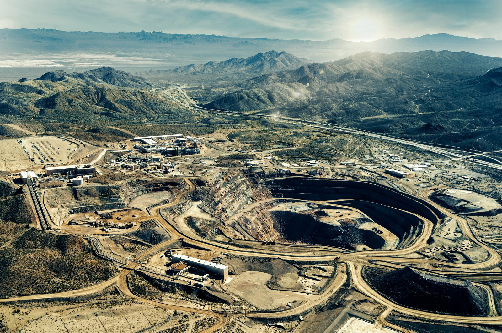

Wydobycie (upstream)
Najważniejsza dana: 90 procent - "the Bayan Obo rare earth reserves constitute over 90% of China's total" 2
W skrócie
Przewagę w wydobyciu dają produkty uboczne, bogata ruda albo koszty środowiskowe pozostające poza rachunkiem kopalni. Chiny łączą atuty Bayan Obo, administracyjnych kwot i przerobu surowca z Mjanmy, podczas gdy MP Materials i Lynas budują alternatywę, a mieszkańcy rejonów wydobycia ponoszą koszt degradacji terenu. Światowe wydobycie w 2024 r. oszacowano najpierw na 390 000 ton REO, czyli tlenków ziem rzadkich, a potem zrewidowano do 380 000 ton, co pokazuje, jak ostrożnie trzeba traktować statystyki podaży. Podaż Mjanmy może zmieniać się szybko, a zachodnie projekty pozostają zależne od ochrony cenowej, czego przykładem jest gwarantowane przez amerykański Departament Obrony 110 USD za kg NdPr przez 10 lat, gdzie USD oznacza dolar amerykański, kg oznacza kilogram, a NdPr produkt neodymu i prazeodymu. Dla inwestora oznacza to, że trwałą przewagę mają nie tylko właściciele złóż, lecz także podmioty kontrolujące finansowanie, przetwórstwo i warunki dostępu do rynku, szerzej omówione w Geopolityka i koncentracja łańcucha dostaw. 3456

Rycina 18: Widok z lotu ptaka na kopalnię i zakład przeróbczy Mountain Pass w Kalifornii - jedyną aktywną kopalnię ziem rzadkich na dużą skalę w USA.1
Bayan Obo - ziemie rzadkie na rachunku rudy żelaza
W systemie Baotou Steel w Bayan Obo ziemie rzadkie są produktem ubocznym rudy żelaza, więc dzielą z nią koszty urabiania i infrastruktury. Złoże zawiera 1,4 miliarda ton rudy żelaza i 39 milionów ton REO, a produkcja trwa od 1957 r.; opracowanie naukowe podaje zarazem ponad 57,4 miliona ton REE, czyli pierwiastków ziem rzadkich, przy klasie 6 procent REE2O3, a więc zawartości wyrażonej jako masa tlenków. Koszt jednostkowy tego modelu jest NIE UJAWNIONY, natomiast Baotou Steel dostarcza koncentrat powiązanej China Northern Rare Earth, a cena transferowa materiału zawierającego 50 procent REO na pierwszy kwartał 2026 r. wynosiła 26 834 RMB za tonę, gdzie RMB to chiński renminbi. Dla inwestora Bayan Obo jest przykładem przewagi trudnej do skopiowania, bo ekonomika ziem rzadkich opiera się tu na całym systemie przemysłowym, a nie wyłącznie na jakości złoża opisanej w Geologia i zasoby złóż. 789
Mountain Pass - od Molycorp do MP Materials
Mountain Pass pokazuje, że dobre złoże nie chroni przed długiem i cyklem cenowym. Molycorp wszedł w 2015 r. w restrukturyzację z 1,7 miliarda USD długu, gdzie USD oznacza dolar amerykański, a kopalnię kupiono z masy upadłościowej w 2017 r. za 20,5 miliona USD. Restart pod kontrolą MP Materials przyniósł w 2024 r. rekordowe 45 455 ton REO w koncentracie i 1 294 ton tlenku NdPr, ale przychód spadł o 20 procent do 203,9 miliona USD. Dla inwestora to ostrzeżenie, że wzrost wolumenu nie wystarcza bez odpornego bilansu, integracji przetwórczej i ceny zapewniającej marżę. 101112
Mt Weld - klasa rudy jako bufor kosztowy
Lynas opiera przewagę Mt Weld na wysokiej klasie złoża, czyli dużej ilości REO w tonie skały. Zasoby wynoszą 106,6 miliona ton przy 4,12 procent TREO, a rezerwy przeznaczone do ekonomicznego wydobycia 32,0 miliona ton przy 6,4 procent TREO; TREO oznacza łączną masę tlenków ziem rzadkich. Taka klasa ogranicza masę skały do wydobycia, mielenia i transportu, choć gotówkowy koszt Mt Weld jest NIE UJAWNIONY, a Lynas zakłada po rozbudowie 12 000 ton gotowego NdPr rocznie przez 20 lat. Dla inwestora wysoka zawartość rudy stanowi bufor kosztowy, lecz nie usuwa ryzyka wykonania rozbudowy ani wahań cen produktu końcowego. 1314
Gliny jonowe - tani roztwór, kosztowny krajobraz
W glinach jonowo-adsorpcyjnych metale są słabo związane z minerałami ilastymi, dlatego ługowanie in-situ polega na wtłaczaniu siarczanu amonu do gruntu i odbiorze cieczy z jonami metali bez odkrywki. Niski próg sprzętowy sprzyja rozproszeniu działalności, ale roztwór migruje w glebie i wodach: w Chipwi i Momauk zinwentaryzowano 2 700 basenów ługowniczych, a powierzchnia górnicza wzrosła z 26 000 ha w 2018 r. do 46 700 ha w 2024 r., gdzie ha oznacza hektar. Dla inwestora niskie nakłady wydobywcze oznaczają tu podwyższone ryzyko środowiskowe, społeczne i regulacyjne rozwinięte w Środowisko, radioaktywność, ESG i regulacje. 153
Zaostrzenie kontroli w Chinach przesunęło ten model do przygranicznego Kaczin w Mjanmie, skąd ponad 90 procent produkcji trafia ostatecznie do chińskiego ekosystemu rafinacji. Ma to szczególne znaczenie dla HREE, czyli ciężkich pierwiastków ziem rzadkich, ponieważ Kaczin ma odpowiadać za około 60 procent globalnej podaży dysprozu i terbu. Dla inwestora oznacza to, że geograficzne przeniesienie wydobycia nie przełamało chińskiej kontroli nad łańcuchem, za to zwiększyło ekspozycję na niestabilność polityczną i operacyjną. 1617
Monazyt - odzysk z piasków zamiast osobnej kopalni
Monazyt jest produktem ubocznym ciężkich piasków mineralnych, czyli osadów wzbogaconych przez wodę i grawitację. Chemours dostarcza z Georgii 2 500 ton monazytu rocznie do Energy Fuels, a materiał ma średnio 55 procent TREO i 0,20 procent uranu, więc przewadze kosztowej towarzyszy kontrola promieniotwórczości. Dalej w łańcuchu Energy Fuels wytworzył w White Mesa Mill w 2024 r. około 38 000 kg separowanego NdPr, natomiast Iluka ma w Eneabba 1 milion ton zapasu monazytu i ksenotymu oraz planuje rafinerię o mocy 17,5 tysiąca ton TREO rocznie. Dla inwestora monazyt łączy atrakcyjny koszt pozyskania z barierą technologiczną i regulacyjną, dlatego wartość przesuwa się ku podmiotom zdolnym prowadzić proces opisany w Separacja, rafinacja i metalurgia. 18192021
Kwoty MIIT - kontrola legalnego rdzenia podaży
MIIT, czyli chińskie Ministerstwo Przemysłu i Technologii Informacyjnych, administruje legalnym wydobyciem poprzez grupy państwowe. Kwota na 2024 r. wynosiła 270 000 ton REO i nie obejmowała produkcji nieudokumentowanej; w pierwszej transzy China Northern Rare Earth otrzymała 94 580 ton na lekkie REE, a China Rare Earth Group 40 420 ton, w tym 10 140 ton z glin jonowych. Dostęp ograniczono do 2 grup wobec wcześniejszych 6, choć szara strefa nie zniknęła, bo w 2009 r. produkcja wyniosła 129 000 ton przy kwocie 87 620 ton. Dla inwestora kwoty są narzędziem kontroli legalnej podaży i pozycji państwowych czempionów, ale nie dają pełnego obrazu faktycznego wydobycia. 4222324
Techniki wydobycia i wzbogacania
Odkrywka wybiera rudę z powierzchni, metoda podziemna dociera szybami, in-situ wypłukuje metale w złożu, a eksploatacja piasków rozdziela osady. Bayan Obo, Mountain Pass i Mt Weld korzystają z masowego urabiania, gliny Mjanmy z ługowania, a Chemours i Iluka z piasków lub ich zapasów; późniejsze wzbogacanie zwiększa udział minerału użytecznego przed separacją chemiczną. W Mountain Pass nadawa flotacyjna, czyli zmielony bastnazyt podawany do procesu, ma 9,5 procent RE2O3, flotacja, czyli selektywne przyczepianie ziaren do pęcherzyków, daje około 60 procent wagowych REO, a ługowanie kwasowe około 70 procent. Monazyt także wydziela się fizycznie przed chemią, lecz parametry jego flotacji są NIE UJAWNIONE. Dla inwestora wybór techniki przekłada się jednocześnie na odzysk, koszty i obciążenia środowiskowe, więc sama wielkość zasobu nie przesądza o ekonomice projektu. 25
Krzywa kosztów i nieprzejrzysta podaż HREE
Krzywa kosztów szereguje kopalnie według kosztu jednostkowego, ale dostępne dane nie pozwalają zbudować w pełni porównywalnego zestawienia. Mountain Pass raportował w pierwszym kwartale 2023 r. koszt 1 978 USD za tonę REO i cenę 9 365 USD za tonę, podczas gdy Bayan Obo wspiera współprodukt żelazny, Mt Weld klasa 6,4 procent TREO, a monazyt wcześniejsze wydobycie piasków, lecz ich porównywalne koszty są NIE UJAWNIONE. Przy PrNd poniżej 60 USD za kg połowa prognozowanej podaży spoza Chin w 2030 r. miałaby trudność z produkcją, a tylko 8 aktywów pokrywałoby koszty bezpośrednie. Dla inwestora oznacza to, że zachodnia podaż pozostaje wrażliwa na spadek cen i może wymagać kontraktów ochronnych lub wsparcia państwa. 2627
W Mjanmie produkcja spadła z 43 000 ton REO w 2023 r. do 31 000 ton w 2024 r., choć liczba miejsc wydobycia w Kaczin wzrosła z około 130 w 2020 r. do ponad 370 pod koniec 2024 r. KIA, czyli Armia Niepodległości Kaczin, przejęła Chipwi i Pangwa w październiku 2024 r. i ustaliła podatek 35 000 CNY, czyli RMB, za tonę, czyli 4 830 USD. Rozproszone ługowanie i rozliczenie na granicy czynią HREE bardziej widocznymi w chińskim imporcie niż w ewidencji kopalń. Dla inwestora rozjazd między liczbą miejsc a raportowaną produkcją sygnalizuje niską przejrzystość podaży i wysokie ryzyko nagłych zakłóceń. 4152829
Nigeria i Tajlandia pokazują ryzyko transshipmentu, czyli przeładunku lub reeksportu przypisanego statystycznie krajowi pośredniemu. USGS, amerykańska służba geologiczna, początkowo podniósł dla 2024 r. oba kraje do 13 000 ton REO na podstawie raportowanego importu Chin, po czym zrewidował Nigerię do 1 500 ton, a Tajlandię do znacznie niższego poziomu. Dodatkowym sygnałem ostrzegawczym jest deklarowane 0 komercyjnych kopalń REE w Tajlandii, choć są to przesłanki niespójności pochodzenia, a nie dowód, że konkretny transport REE przeładowano. Dla inwestora takie rewizje ograniczają użyteczność danych krajowych i zwiększają wartość niezależnej weryfikacji przepływów materiału. 4530
xychart-beta title "Kopalnie REE w stanie Kaczin (liczba)" x-axis ["2020", "2024"] y-axis "Liczba kopalń" bar [130, 370]
Rycina 8: Wzrost liczby kopalń ziem rzadkich w Kaczin (Mjanma), 2020 vs 2024.
Kontrowersje
Udział Chin zależy od przyjętej definicji. Międzynarodowa Agencja Energetyczna, IEA, przypisuje Chinom około 60 procent globalnego wydobycia w 2024 r., ISP Myanmar podaje 61 procent dla Chin i 16 procent dla Mjanmy, natomiast zestawienie kwoty 270 000 ton z pierwotnym światowym szacunkiem 390 000 ton daje raportowane 69,2 procent. Pierwsze ujęcie rozdziela miejsce wydobycia, drugie może ekonomicznie przypisywać Chinom surowiec mjanmarski, którego ponad 90 procent trafia do ich rafinacji. Dla inwestora rozbieżność nie zmienia wniosku o koncentracji, ale utrudnia precyzyjną wycenę skali chińskiej kontroli. 3132416
Skala szarej strefy ma dwie niezgodne miary. Dla 2011 r. szacowano przemyt na ponad 21 000 ton, ale 8 wykrytych spraw obejmowało tylko 769 ton, a równocześnie udokumentowane przekroczenie kwoty w 2009 r. wyniosło 129 000 ton produkcji wobec limitu 87 620 ton. To różne kategorie, których nie wolno sumować ani traktować jako bieżącego wolumenu. Dla inwestora wniosek jest taki, że oficjalne limity pokazują intencję regulatora, lecz nie zawsze rzeczywistą podaż. 3324
Wolumen Mjanmy zależy głównie od chińskich danych granicznych. USGS podał 31 000 ton produkcji w 2024 r., podczas gdy GACC, chińska administracja celna, wykazała 44 400 ton importu z Mjanmy i udział 34 procent w całym imporcie Chin. Import może obejmować zapasy i koncentraty, a produkcja jest estymatą kopalnianą; dodatkowo USGS zrewidował później produkcję 2024 r. do 27 000 ton. Dla inwestora oznacza to, że pojedynczy szacunek wolumenu nie powinien być podstawą tezy bez porównania danych kopalnianych, celnych i magazynowych. 4345
Koszt zachodni i cena chińska nie są porównywalnymi punktami tej samej krzywej. MP Materials ujawnił 1 978 USD kosztu na tonę REO i 9 365 USD ceny zrealizowanej, natomiast 26 834 RMB za tonę w Chinach dotyczy ceny transferowej koncentratu zawierającego 50 procent REO między powiązanymi podmiotami. Zwolennicy zachodnich projektów wskazują cenę podłogową 110 USD za kg NdPr, krytycy zaś próg 60 USD za kg tlenku neodymu i prazeodymu, poniżej którego połowa prognozowanej podaży spoza Chin miałaby problem z produkcją. Różnicę tworzą odmienny produkt, wsparcie państwa i koszty środowiskowe, których pełne wartości są NIE UJAWNIONE. Dla inwestora porównanie wymaga ujednolicenia produktu i zakresu kosztów, inaczej pozorna przewaga cenowa może prowadzić do błędnej wyceny. 269627
Spółki powiązane
- Arafura Rare Earths (ARU, ASX) - profil deep
- China Northern Rare Earth (600111, SSE) - profil deep
- Energy Fuels (UUUU, NYSE) - profil deep
- Iluka Resources (ILU, ASX) - profil deep
- Lynas Rare Earths (LYC, ASX) - profil deep
- MP Materials (MP, NYSE) - profil deep
- Shenghe Resources (600392, SSE) - profil deep
- Hastings Technology Metals (HAS, ASX) - profil lite
Źródła
- ilustracja - https://commons.wikimedia.org/wiki/File:Mountain_Pass_Rare_Earth_Mine_%26_Processing_Facility.jpg
- PMC - https://pmc.ncbi.nlm.nih.gov/articles/PMC10006493/
- Mongabay - https://news.mongabay.com/2025/09/satellite-data-show-burst-of-deforestation-in-myanmar-rare-earth-mining-hotspots/
- USGS - https://pubs.usgs.gov/periodicals/mcs2025/mcs2025-rare-earths.pdf
- USGS - https://pubs.usgs.gov/periodicals/mcs2026/mcs2026-rare-earths.pdf
- MP Materials - https://mpmaterials.com/news/mp-materials-announces-transformational-public-private-partnership-with-the-department-of-defense-to-accelerate-u-s-rare-earth-magnet-independence/
- NS Energy - https://www.nsenergybusiness.com/projects/bayan-obo-rare-earth-mine/
- ScienceDirect - https://www.sciencedirect.com/science/article/pii/S1674987115001310
- Rare Earth Exchanges - https://rareearthexchanges.com/news/china-sets-q1-2026-rare-earth-concentrate-price-at-rmb-26834-ton-reinforcing-state-control-of-the-global-supply-chain/
- Forbes - https://www.forbes.com/sites/michaelkanellos/2015/06/26/three-lessons-from-the-woeful-tale-of-molycorp/
- Mining.com - https://www.mining.com/mountain-pass-sells-20-5-million/
- MP Materials - https://mpmaterials.com/news/mp-materials-reports-fourth-quarter-and-full-year-2024-results/
- Lynas - https://lynasrareearths.com/mt-weld-western-australia-2/
- Investing News - https://investingnews.com/lynas-mount-weld-resource-reserves/
- ISP Myanmar - https://ispmyanmar.com/mp-89/
- DASHLINE - https://www.9dashline.com/article/chinas-dominance-in-myanmars-rare-earth-resources-a-growing-risk-for-global-supply-chains
- EarthRights - https://earthrights.org/media_release/policy-brief-widespread-environmental-and-human-rights-damages-from-rare-earth-mining-in-kachin-state-myanmar-linked-to-green-energy-industry/
- Energy Fuels - https://www.investorwire.com/news-articles/energy-fuels-inc-nyse-american-uuuu-tsx-efr-supply-agreement-with-chemours-represents-commitment-to-re-establish-us-rare-earth-supply-chain/
- PR Newswire - https://www.prnewswire.com/news-releases/energy-fuels-set-to-enter-commercial-rare-earth-business-in-q1-2021-producing-materials-that-make-many-clean-energy-and-advanced-technologies-possible-webcast-on-dec-15-301191660.html
- Energy Fuels - https://investors.energyfuels.com/2025-02-27-Energy-Fuels-Announces-2024-Results,-Including-Active-U-S-Uranium-Mining,-Uranium-and-Mineral-Sand-Sales,-Commercial-U-S-Rare-Earth-Production,-and-Strong-Balance-Sheet
- Iluka - https://www.iluka.com/operations-resource-development/resource-development/eneabba
- Fastmarkets - https://www.fastmarkets.com/insights/china-issues-first-batch-of-rare-earths-quotas-for-2024/
- Mining Technology - https://www.mining-technology.com/news/china-rare-earth-quotas-2025/
- USGS - https://pubs.usgs.gov/of/2011/1042/of2011-1042.pdf
- Metallurgist - https://inldigitallibrary.inl.gov/content/uploads/50/2026/04/Sort_7228.pdf
- MP Materials - https://markets.financialcontent.com/lightport.lightport3/article/bizwire-2023-5-4-mp-materials-reports-first-quarter-2023-results
- Benchmark Mineral Intelligence - https://source.benchmarkminerals.com/article/higher-prices-needed-to-develop-ex-china-rare-earths-supply
- Lowy Institute - https://www.lowyinstitute.org/the-interpreter/northern-myanmar-latest-stop-trump-s-rare-earths-escapade
- New Security Beat - https://www.newsecuritybeat.org/2025/08/northern-myanmars-rare-earths-are-shaping-local-power-and-global-competition/
- Thai Newsroom - https://thainewsroom.com/2025/10/30/where-are-thailands-rare-earth-elements-that-us-seeks-found/
- Mercom India - https://www.mercomindia.com/chinas-dominance-in-critical-minerals-supply-and-refining-continues-iea
- ISP Myanmar - https://ispmyanmar.com/pet-03/
- American Ceramic Society - https://ceramics.org/ceramic-tech-today/china-defends-rare-earth-stance-smuggling-exceeding-legal-exports/
- China Briefing - https://www.china-briefing.com/news/chinas-rare-earth-elements-dominance-in-global-supply-chains/
- 9.5 procent RE2O3 (nadawa do flotacji, Mountain Pass) - https://www.911metallurgist.com/blog/flotation-rare-earths-bastnasite-ore/
- 1500 liczba uczestników protestu w Chiang Rai (czerwiec 2025) przeciw zanieczyszczeniu z kopalń REE w Mjanmie - https://www.aljazeera.com/news/2025/8/7/satellite-images-show-surge-in-rare-earth-mining-in-rebel-held-myanmar